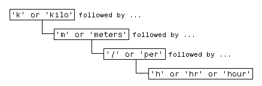

Regular Expressions
This topic describes what regular expressions are and how to use them to search text.
Regular expressions are flexible and powerful, though they use complex syntax. An
alternative to regular expressions is a pattern (since R2020b), which is simpler to define and results in
code that is easier to read. For more information, see Build Pattern Expressions.
What Is a Regular Expression?
A regular expression is a sequence of characters that defines a certain pattern. You normally use a regular expression to search text for a group of words that matches the pattern, for example, while parsing program input or while processing a block of text.
The character vector 'Joh?n\w*' is an example of a regular expression. It defines a pattern that starts with the letters Jo, is optionally followed by the letter h (indicated by 'h?'), is then followed by the letter n, and ends with any number of word characters, that is, characters that are alphabetic, numeric, or underscore (indicated by '\w*'). This pattern matches any of the following:
Jon, John, Jonathan, Johnny
Regular expressions provide a unique way to search a volume of text for a particular subset of characters within that text. Instead of looking for an exact character match as you would do with a function like strfind, regular expressions give you the ability to look for a particular pattern of characters.
For example, several ways of expressing a metric rate of speed are:
km/h km/hr km/hour kilometers/hour kilometers per hour
You could locate any of the above terms in your text by issuing five separate search commands:
strfind(text, 'km/h'); strfind(text, 'km/hour'); % etc.
To be more efficient, however, you can build a single phrase that applies to all of these search terms:

Translate this phrase into a regular expression (to be explained later in this section) and you have:
pattern = 'k(ilo)?m(eters)?(/|\sper\s)h(r|our)?';
Now locate one or more of the terms using just a single command:
text = ['The high-speed train traveled at 250 ', ... 'kilometers per hour alongside the automobile ', ... 'travelling at 120 km/h.']; regexp(text, pattern, 'match')
ans =
1×2 cell array
{'kilometers per hour'} {'km/h'}
There are four MATLAB® functions that support searching and replacing characters using regular expressions. The first three are similar in the input values they accept and the output values they return. For details, click the links to the function reference pages.
| Function | Description |
|---|---|
regexp | Match regular expression. |
regexpi | Match regular expression, ignoring case. |
regexprep | Replace part of text using regular expression. |
regexptranslate | Translate text into regular expression. |
When calling any of the first three functions, pass the text to be parsed and the regular expression in the first two input arguments. When calling regexprep, pass an additional input that is an expression that specifies a pattern for the replacement.
Steps for Building Expressions
There are three steps involved in using regular expressions to search text for a particular term:
Identify unique patterns in the string
This entails breaking up the text you want to search for into groups of like character types. These character types could be a series of lowercase letters, a dollar sign followed by three numbers and then a decimal point, etc.
Express each pattern as a regular expression
Use the metacharacters and operators described in this documentation to express each segment of your search pattern as a regular expression. Then combine these expression segments into the single expression to use in the search.
Call the appropriate search function
Pass the text you want to parse to one of the search functions, such as
regexporregexpi, or to the text replacement function,regexprep.
The example shown in this section searches a record containing contact information belonging to a group of five friends. This information includes each person's name, telephone number, place of residence, and email address. The goal is to extract specific information from the text..
contacts = { ...
'Harry 287-625-7315 Columbus, OH hparker@hmail.com'; ...
'Janice 529-882-1759 Fresno, CA jan_stephens@horizon.net'; ...
'Mike 793-136-0975 Richmond, VA sue_and_mike@hmail.net'; ...
'Nadine 648-427-9947 Tampa, FL nadine_berry@horizon.net'; ...
'Jason 697-336-7728 Montrose, CO jason_blake@mymail.com'};
The first part of the example builds a regular expression that represents the format of a standard email address. Using that expression, the example then searches the information for the email address of one of the group of friends. Contact information for Janice is in row 2 of the contacts cell array:
contacts{2}
ans =
'Janice 529-882-1759 Fresno, CA jan_stephens@horizon.net'
Step 1 — Identify Unique Patterns in the Text
A typical email address is made up of standard components: the user's account name, followed by an @ sign, the name of the user's internet service provider (ISP), a dot (period), and the domain to which the ISP belongs. The table below lists these components in the left column, and generalizes the format of each component in the right column.
| Unique patterns of an email address | General description of each pattern |
|---|---|
Start with the account namejan_stephens . . . | One or more lowercase letters and underscores |
Add '@'jan_stephens@ . . . | @ sign |
Add the ISP jan_stephens@horizon . . . | One or more lowercase letters, no underscores |
Add a dot (period)jan_stephens@horizon. . . . | Dot (period) character |
Finish with the domainjan_stephens@horizon.net | com or net |
Step 2 — Express Each Pattern as a Regular Expression
In this step, you translate the general formats derived in Step 1 into segments of a regular expression. You then add these segments together to form the entire expression.
The table below shows the generalized format descriptions of each character pattern in the left-most column. (This was carried forward from the right column of the table in Step 1.) The second column shows the operators or metacharacters that represent the character pattern.
| Description of each segment | Pattern |
|---|---|
| One or more lowercase letters and underscores | [a-z_]+ |
@ sign | @ |
| One or more lowercase letters, no underscores | [a-z]+ |
| Dot (period) character | \. |
com or net | (com|net) |
Assembling these patterns into one character vector gives you the complete expression:
email = '[a-z_]+@[a-z]+\.(com|net)';
Step 3 — Call the Appropriate Search Function
In this step, you use the regular expression derived in Step 2 to match an email address for one of the friends in the group. Use the regexp function to perform the search.
Here is the list of contact information shown earlier in this section. Each person's record occupies a row of the contacts cell array:
contacts = { ...
'Harry 287-625-7315 Columbus, OH hparker@hmail.com'; ...
'Janice 529-882-1759 Fresno, CA jan_stephens@horizon.net'; ...
'Mike 793-136-0975 Richmond, VA sue_and_mike@hmail.net'; ...
'Nadine 648-427-9947 Tampa, FL nadine_berry@horizon.net'; ...
'Jason 697-336-7728 Montrose, CO jason_blake@mymail.com'};
This is the regular expression that represents an email address, as derived in Step 2:
email = '[a-z_]+@[a-z]+\.(com|net)';
Call the regexp function, passing row 2 of the contacts cell array and the email regular expression. This returns the email address for Janice.
regexp(contacts{2}, email, 'match')
ans =
1×1 cell array
{'jan_stephens@horizon.net'}
MATLAB parses a character vector from left to right, “consuming” the vector as it goes. If matching characters are found, regexp records the location and resumes parsing the character vector, starting just after the end of the most recent match.
Make the same call, but this time for the fifth person in the list:
regexp(contacts{5}, email, 'match')
ans =
1×1 cell array
{'jason_blake@mymail.com'}
You can also search for the email address of everyone in the list by using the entire cell array for the input argument:
regexp(contacts, email, 'match');
Operators and Characters
Regular expressions can contain characters, metacharacters, operators, tokens, and flags that specify patterns to match, as described in these sections:
Metacharacters
Metacharacters represent letters, letter ranges, digits, and space characters. Use them to construct a generalized pattern of characters.
Metacharacter | Description | Example |
|---|---|---|
| Any single character, including white space |
|
| Any character contained within the square brackets. The following characters are treated
literally: |
|
| Any character not contained within the square brackets. The following characters are treated
literally: |
|
| Any character in the range of |
|
| Any alphabetic, numeric, or underscore character. For
English character sets, |
|
| Any character that is not alphabetic, numeric, or underscore.
For English character sets, |
|
| Any white-space character; equivalent to |
|
| Any non-white-space character; equivalent to |
|
| Any numeric digit; equivalent to |
|
| Any nondigit character; equivalent to |
|
| Character of octal value |
|
| Character of hexadecimal value |
|
Character Representation
Operator | Description |
|---|---|
| Alarm (beep) |
| Backspace |
| Form feed |
| New line |
| Carriage return |
| Horizontal tab |
| Vertical tab |
| Any character with special meaning in regular expressions
that you want to match literally (for example, use |
Quantifiers
Quantifiers specify the number of times a pattern must occur in the matching text.
Quantifier | Number of Times Expression Occurs | Example |
|---|---|---|
| 0 or more times consecutively. |
|
| 0 times or 1 time. |
|
| 1 or more times consecutively. |
|
| At least
|
|
| At least
|
|
| Exactly Equivalent
to |
|
Quantifiers can appear in three modes, described in the following table. q represents any of the quantifiers in the previous table.
Mode | Description | Example |
|---|---|---|
| Greedy expression: match as many characters as possible. | Given the text |
| Lazy expression: match as few characters as necessary. | Given the text |
| Possessive expression: match as much as possible, but do not rescan any portions of the text. | Given the text |
Grouping Operators
Grouping operators allow you to capture tokens, apply one operator to multiple elements, or disable backtracking in a specific group.
Grouping Operator | Description | Example |
|---|---|---|
| Group elements of the expression and capture tokens. |
|
| Group, but do not capture tokens. |
Without
grouping, |
| Group atomically. Do not backtrack within the group to complete the match, and do not capture tokens. |
|
| Match expression If
there is a match with You can include |
|
Anchors
Anchors in the expression match the beginning or end of a character vector or word.
Anchor | Matches the... | Example |
|---|---|---|
| Beginning of the input text. |
|
| End of the input text. |
|
| Beginning of a word. |
|
| End of a word. |
|
Lookaround Assertions
Lookaround assertions look for patterns that immediately precede or follow the intended match, but are not part of the match.
The pointer remains at the current location, and characters that correspond to the test expression are not captured or discarded. Therefore, lookahead assertions can match overlapping character groups.
Lookaround Assertion | Description | Example |
|---|---|---|
| Look ahead for characters that match |
|
| Look ahead for characters that do not match |
|
| Look behind for characters that match |
|
| Look behind for characters that do not match |
|
If you specify a lookahead assertion before an expression, the operation is equivalent to a logical AND.
Operation | Description | Example |
|---|---|---|
| Match both |
|
| Match |
|
For more information, see Lookahead Assertions in Regular Expressions.
Logical and Conditional Operators
Logical and conditional operators allow you to test the state of a given condition, and then use the outcome to determine which pattern, if any, to match next. These operators support logical OR and if or if/else conditions. (For AND conditions, see Lookaround Assertions.)
Conditions can be tokens, lookaround assertions, or dynamic expressions of the form (?@cmd). Dynamic expressions must return a logical or numeric value.
Conditional Operator | Description | Example |
|---|---|---|
| Match expression If
there is a match with |
|
| If condition |
|
| If condition |
|
Token Operators
Tokens are portions of the matched text that you define by enclosing part of the regular expression in parentheses. You can refer to a token by its sequence in the text (an ordinal token), or assign names to tokens for easier code maintenance and readable output.
Ordinal Token Operator | Description | Example |
|---|---|---|
| Capture in a token the characters that match the enclosed expression. |
|
| Match the |
|
| If the |
|
Named Token Operator | Description | Example |
|---|---|---|
| Capture in a named token the characters that match the enclosed expression. |
|
| Match the token referred to by |
|
| If the named token is found, then match |
|
Note
If an expression has nested parentheses, MATLAB captures tokens that correspond to the outermost set of parentheses. For example, given the search pattern '(and(y|rew))', MATLAB creates a token for 'andrew' but not for 'y' or 'rew'.
For more information, see Tokens in Regular Expressions.
Dynamic Expressions
Dynamic expressions allow you to execute a MATLAB command or a regular expression to determine the text to match.
The parentheses that enclose dynamic expressions do not create a capturing group.
Operator | Description | Example |
|---|---|---|
| Parse When parsed, |
|
| Execute the MATLAB command represented by |
|
| Execute the MATLAB command represented by |
|
Within dynamic expressions, use the following operators to define replacement terms.
Replacement Operator | Description |
|---|---|
| Portion of the input text that is currently a match |
| Portion of the input text that precedes the current match |
| Portion of the input text that follows the current match
(use |
|
|
| Named token |
| Output returned when MATLAB executes the command, |
For more information, see Dynamic Regular Expressions.
Comments
The comment operator enables you to insert comments into your code to make it more maintainable. The text of the comment is ignored by MATLAB when matching against the input text.
Characters | Description | Example |
|---|---|---|
(?#comment) | Insert a comment in the regular expression. The comment text is ignored when matching the input. |
|
Search Flags
Search flags modify the behavior for matching expressions.
Flag | Description |
|---|---|
(?-i) | Match letter case (default for |
(?i) | Do not match letter case (default for |
(?s) | Match dot ( |
(?-s) | Match dot in the pattern with any character that is not a newline character. |
(?-m) | Match the |
(?m) | Match the |
(?-x) | Include space characters and comments when matching (default). |
(?x) | Ignore space characters and comments when matching. Use |
The expression that the flag modifies can appear either after the parentheses, such as
(?i)\w*
or inside the parentheses and separated from the flag with a colon (:), such as
(?i:\w*)
The latter syntax allows you to change the behavior for part of a larger expression.
See Also
regexp | regexpi | regexprep | regexptranslate | pattern